"Your school wants to strengthen the community by encouraging experienced students to connect with new students and help them adjust to campus life. Design an experience that allows mentors and mentees to discover each other. Consider the needs of both mentors and mentees, including how someone may become a mentor and how to connect mentors to mentees."
I interviewed 4 UCSD students and identified pain points within existing mentoring programs at UCSD.
After analyzing the user interviews, I consolidated their responses into some major pain points:
I created How Can We statements and chose one that best targeted the pain points.
With these pain points in mind from my user interviews, I created this How Can We statement to define the scope of the project:
How can we promote more social interactions to create better mentor/mentee pairings among UCSD students?
I generated a bunch of ideas and focused on one to prototype: Mentor Pair Challenges.
Get paired with a student, go on a coffee date, and have several conversations before settling on a mentor or mentee.
Pro: More intimate, one to one conversations
Con: Takes more time to find someone with a compatible personality
Swipe through profiles to begin chatting.
Pro: More options
Con: Abundance of options might result in reluctance to commit to a single mentor/mentee
Students complete challenges with potential mentors/mentees to get to know one another better.
Pro: Problem solving challenges can reveal more about the pair’s compatibility
Con: Challenges may result in competitions among students for their desired pairings
I created journey maps for both mentors and mentees, then began sketching to map out the user flow. Then, I moved onto Sketch to create low-fidelity wireframes.
Mentees:
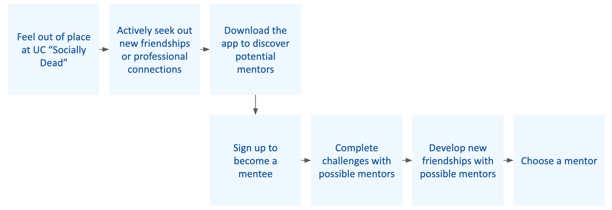Mentors:
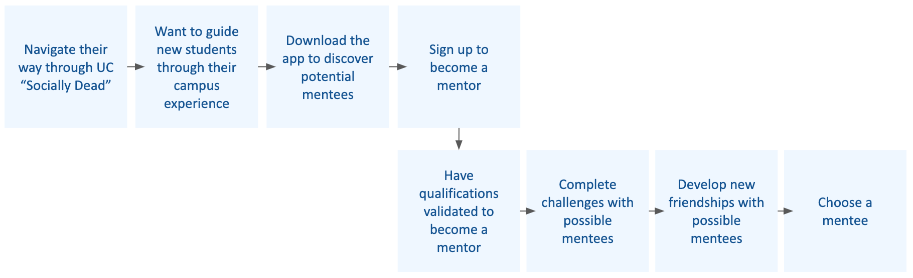With the journey map in mind for both mentors and mentees, I sketched out the screens to map out the user flow. After a few iterations, I moved over to Sketch to create low-fidelity wireframes.
This is the complete user flow of the challenge platform. Since the flow for both mentors and mentees were similar, I decided combine the two for the low-fidelity prototype to focus on the functionality.
I decided to separate the functions into three main tabs: Discover, Challenge, and Profile.
The Discover tab allows users to find and connect with potential mentors or mentees.
The Challenge tab allows users to find popular and recommended challenges to compete with their potential mentors or mentees.
The Profile tab gives users access to who they're connected with and how many challenges they've completed with each connection.
For the Onboarding process, I spent extra time on designing how students can become a mentor.
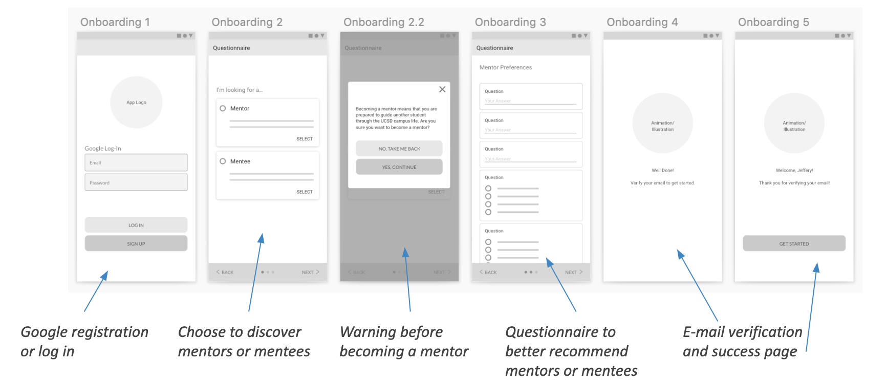Since the qualifications to become a mentor are subjective, I decided to leave it up for users to decide whether they were qualified or not using a warning notification.
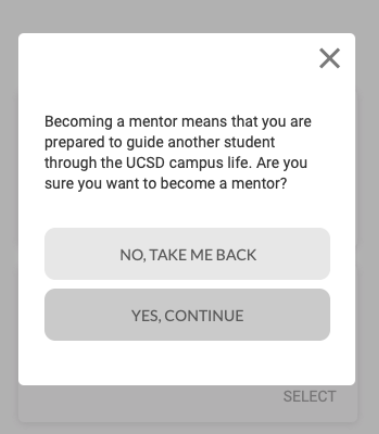To create connections, users can connect with mentor or mentee profiles to initiate a message.
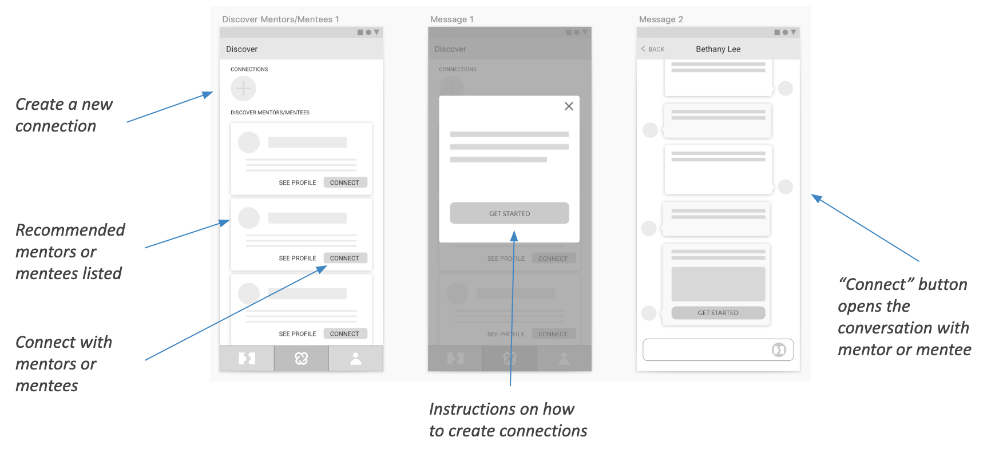These screens reflect the steps to complete a challenge.
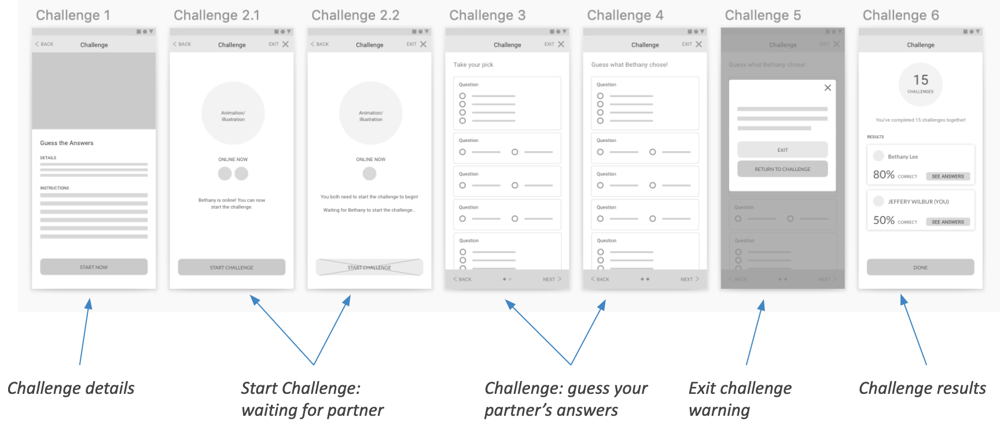The challenge results page places emphasis on the number of completed challenges to quantify users' relationship growth.
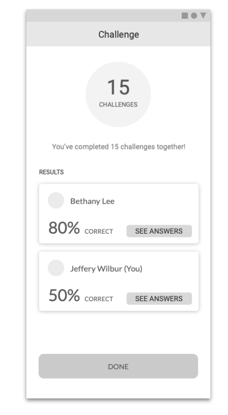These screens reflect the steps to send and start a challenge.
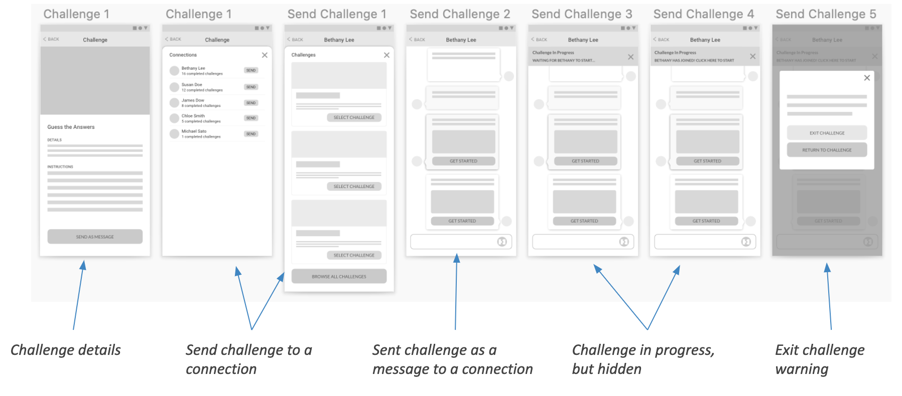The challenge results page places emphasis on the number of completed challenges to quantify users' relationship growth.
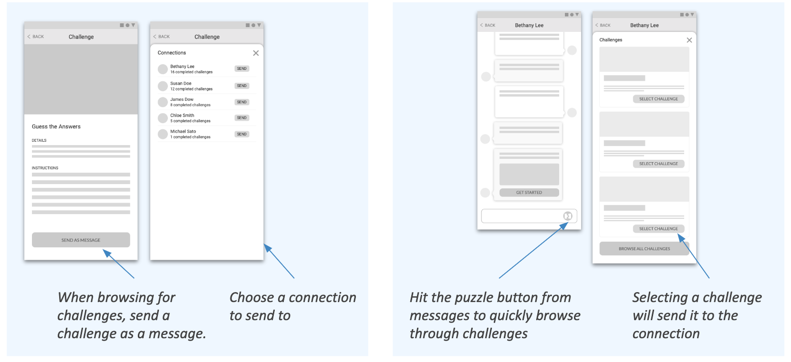I created high fidelity prototypes on Sketch.
In order to make the prototype interactive, I separated the flow between mentors and mentees. I focused on providing more feedback when an action was completed and ensuring that all the links were connected properly with no broken flows. I also focused on the visual design, following the Material Design guidelines.
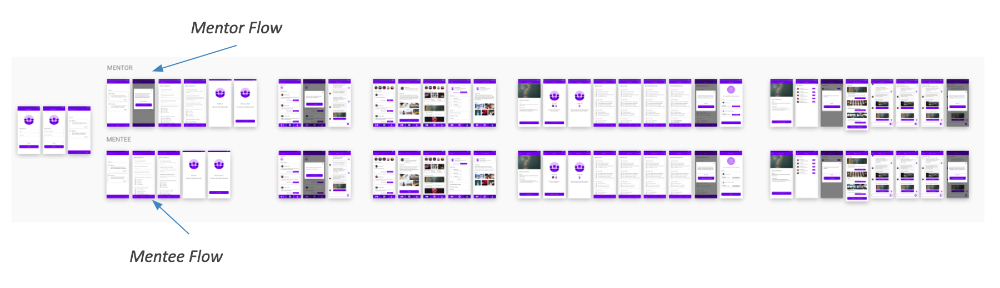Onboarding was the only portion that was different for mentors and mentees. Mentors had an extra warning that reminded them of the responsibilities of mentoring.
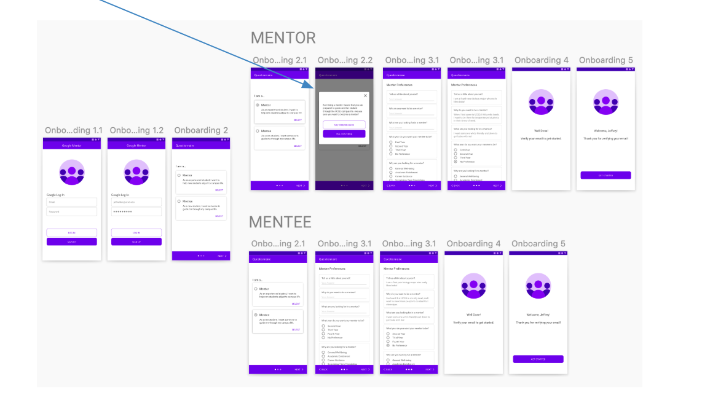Users are prompted to create their first connection once they sign up. These actions are the most prominent to ensure that users take the action.
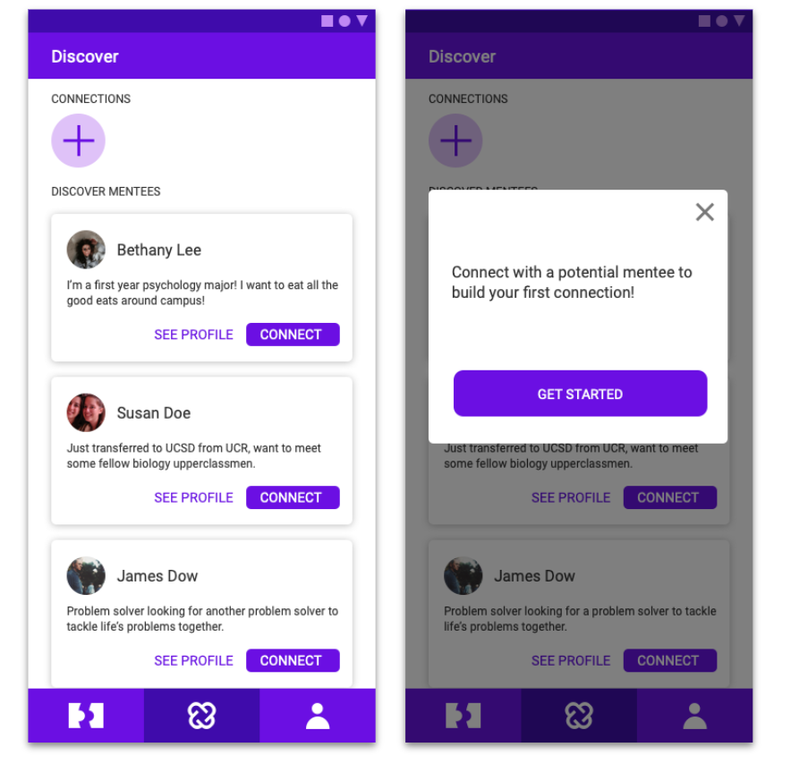The top banner shows that challenges are ongoing. Warnings are set so users don't accidentally exit the challenge.
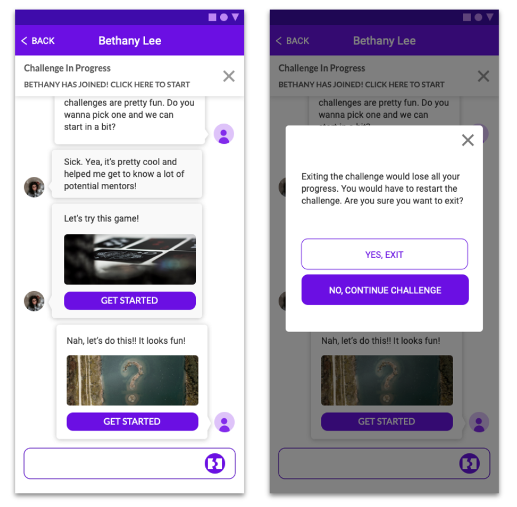The loading screen conveys that challenges need to be completed at the same time. Completing challenges at the same time would give a feeling of connection and higher level of intimacy.
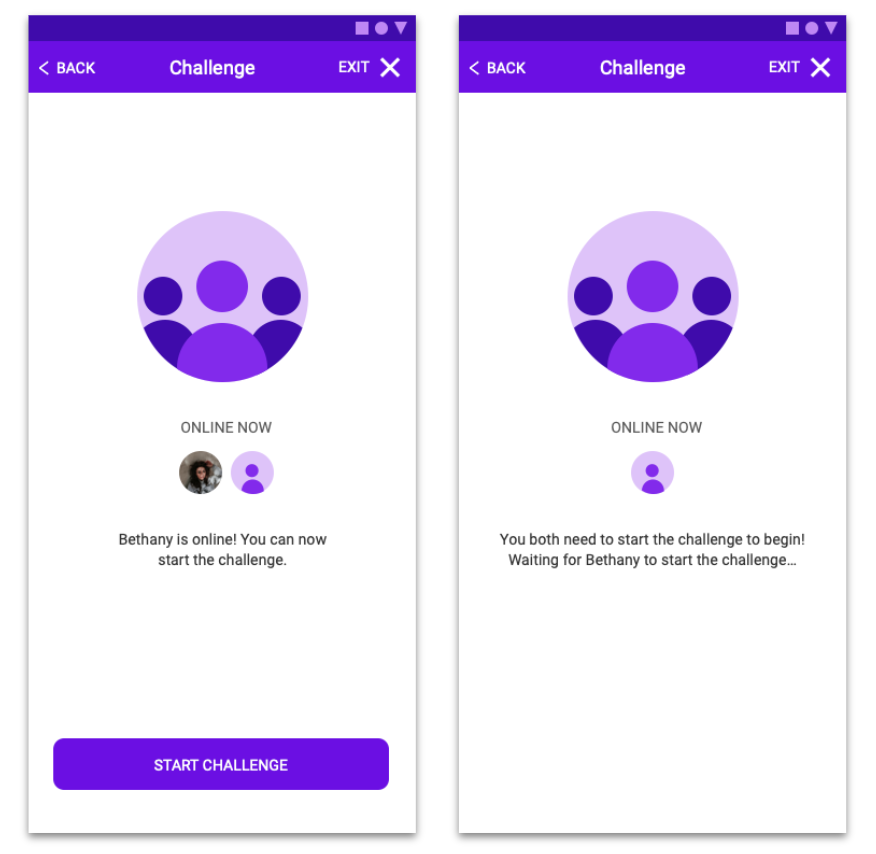Here are the rest of the screens in high-fidelity.
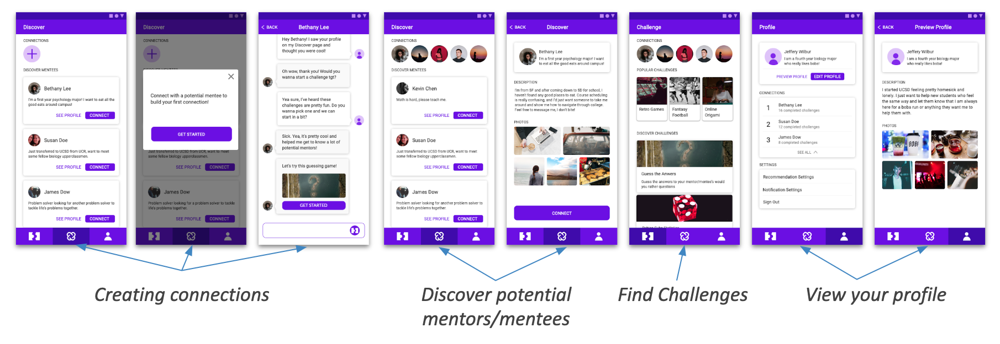 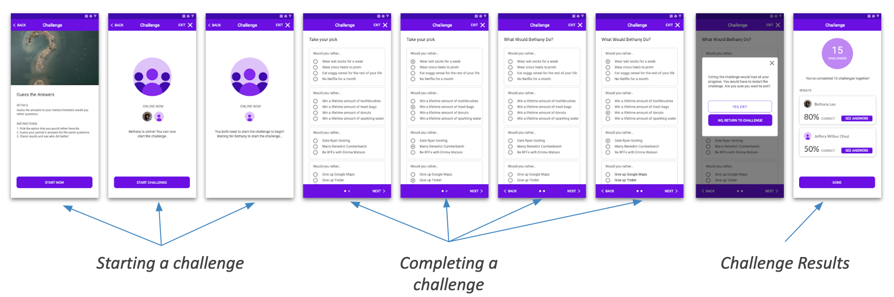 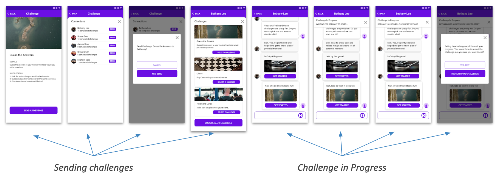How can I do better?
To continue the project, I would: